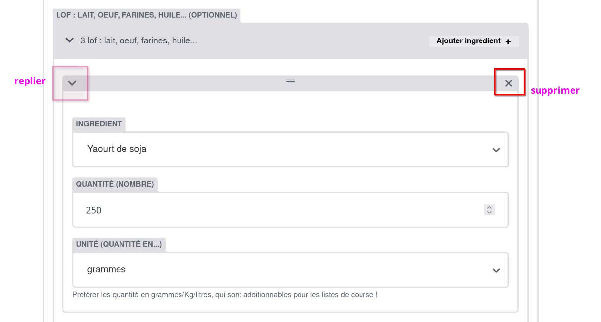

Aperçu de l’édition d’une recette

Certains champs sont optionnels, d’autres sont obligatoires. De nombreux champs servent à classer la recettes, et servent pour la recherche par filtres des recettes.
Important
-
Chaque recette doit avoir un nom unique. Si 2 recettes existent avec le même nom, une seule des 2 sera visible/accessible sur le site. Pensez-y si vous dupliquez des recettes.
-
Ne pas renommer une recette ( ou un ingrédient / un “materiel”, une catégories… ) si vous ne venez pas de la créer. Si une recette est renommée, alors les pages événements qui l’utilisaient n’y auront plus accès, et seront buggées, et les recettes qui lui sont liées comme “recettes alternatives” auront des liens “cassés”. Au pire, dupliquez la recette et mettez lui le nom qui vous convient .
-
Si vous n’êtes pas l’auteur•ices d’une recette mais que vous pensez qu’il faudrait modifier les ingrédients/proportions, à moins que vous ayez eu l’avis de l’auteur•ice, ne le faites pas. Utilisez plutôt l’option “Dupliquer”, modifier le nom de la recette pour la distinguer de la précédente (en ajoutant par exemple “version vachement mieux” :), et modifiez ensuite ce que vous souhaitez.


Les ingrédients
L’ajout des ingrédients dans une recette se fait à partir de champs répartis dans différentes catégories d’ingrédients (sec, fruits et légumes, etc.).
Lorsque vous commencez à taper le nom d’un ingrédient, une liste de propositions apparaît : les ingrédients sont pré-enregistrés afin de permettre certaines classifications automatiques (présence d’allergènes notamment).
Vous pouvez rapidement vérifier la disponibilité d’un ingrédient sur la page ingrédients. Lorsque vous souhaitez ajouter une recette avec des ingrédients peu commun, il peut être malin de se rendre sur cette page au préalable pour vérifier leur existence, et commencer par ajouter les ingrédients manquant au site avant de rédiger la recette. L’ajout d’ingrédients au site se fait depuis l’interface d’édition (colonne de gauche > ingrédients).
→ ajouter un ingrédient → voir la liste d'ingrédients disponible → page de doc sur l'ajout d'ingrédients au site
Indiquer les quantités en Kg, gr., l.s ou mili-l.s est fortement encouragé, afin de permettre l’élaboration des listes de courses lorsque les recettes sont utilisées par une page événement.

- Il est possible de “réduire” les ingrédients déjà ajoutés pour avoir une meilleure visibilité de l’ensemble.
- Pour supprimer un ingrédient: cliquer sur la croix (“fermer”) en haut a droite du cadre de l’ingrédient.


Préparation à faire la veille
Un champ est dédié aux préparations à effectuer la veille du service. Ce qui est inscrit dans ce champ sera mis en évidence dans la recette, afin d’éviter les oublis.


Préparations alternatives
S’il existe des préparations alternatives à celle que vous ajoutez (alternatives végés, ou avec d’autres proportions, etc.), il existe un champ qui permet de les indiquer. Les recettes ainsi liées entre-elles auront alors un lien indiquant l’alternative en bas de leur page.


Publier une recette ✨
Pour publier une recette, il faut :
. Cliquer sur “Publier” → “Publier maintenant”

Si vous modifier de nouveau une recette, afin de publier les modifications, il faut de nouveau faire : “Enregistrer”, puis re-changer le statut de “brouillon” à “prêt”, puis “Publier”…